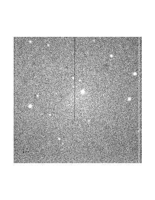
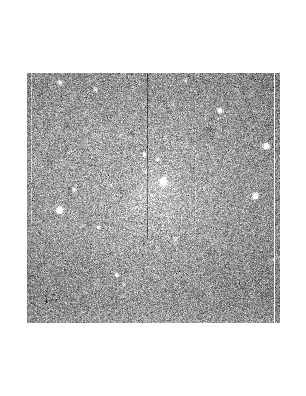
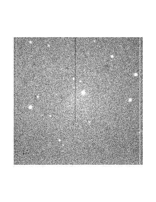

Can You Find Pluto?
 


These two images show the motion of the planet Pluto after nearly three hours during a single night. They were obtained by Advanced Teen astronomers on June 19, 1996, at the 61-inch telescope with the 2048x2048 pixel CCD camera. The exposure time was 30 seconds each.
By calculating the angle through which Pluto should move and then measuring its actual displacement, you can determine the field-of-view of these images.
Blinking the images one after another can help you see Pluto's motion on the sky.
By calculating the angle through which Pluto should move and then measuring its actual displacement, you can determine the field-of-view of these images.
Blinking the images one after another can help you see Pluto's motion on the sky.
Home | Information | Registration | Articles | Links
All Images, Media and Content - Copyright © 2019 Astronomy Camp
Site Design by Jacob Omann. Maintained by Astronomy Camp. Updated November 15, 2018
All Images, Media and Content - Copyright © 2019 Astronomy Camp
Site Design by Jacob Omann. Maintained by Astronomy Camp. Updated November 15, 2018